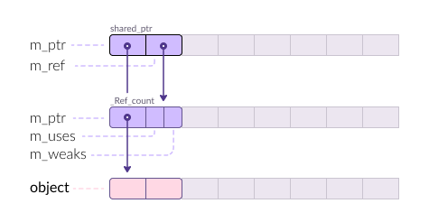
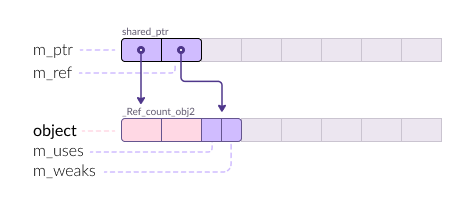

std::shared_ptr
A shared pointer is an object that owns another object through a pointer,
usually obtained via new. shared_ptr implements semantics of shared
ownership; the last remaining owner of the pointer is responsible for destroying
the object, or otherwise releasing the resources associated with the stored
pointer.
Examples
show/hide
Implementation
std::shared_ptr is …
1template<typename T>
2class shared_ptr {
3private:
4 T* m_ptr;
5 _Ref_count_base* m_rep;
6}
https://herbsutter.com/2013/05/29/gotw-89-solution-smart-pointers
Details
-
Uses atomic inc / dev. On Windows
_InterlockedIncrement, which is as simple asmov eax, 1; mov ebx, ptr; lock add [ebx], eaxUsing
lockintroduces performance penalties due to cache invalidation, pipeline stalling (no out-of-order execution), and waiting time to acquire the lock. -
Has a base class, hence virtual functions. Does it penalize performance ?
Size
- n bytes (64-bit)
- n/2 bytes (32-bit)
Layout
_Ref_count_base.
The derived class tells how the object was created.
Two notable examples:
new
_Ref_count

make
_Ref_count_obj2

make_shared vs ptr = new ...
See Also
Reference
template<class T>
class shared_ptr;
construct
-
shared_ptr() noexceptunique_ptr(pointer p) noexceptunique_ptr(const unique_ptr&) = delete
Disable construction from lvalue.unique_ptr(unique_ptr&& u) noexceptunique_ptr(nullptr_t) noexcepttemplate<class U, class E>
unique_ptr(unique_ptr<U, E>&& u) noexcept
assign / copy
-
operator=(unique_ptr&& u) noexcept -> unique_ptr&operator=(const unique_ptr&) -> unique_ptr& = delete
Disable copy from lvalue.
observe
-
get() const noexcept -> pointer -
get_deleter() const noexcept -> const deleter_type& -
operator*() const -> add_lvalue_reference_t<T> -
operator->() const noexcept -> pointer -
operator bool() const noexcept
modify
-
release() noexcept -> pointer -
reset(pointer p = pointer()) noexcept -> void -
swap(unique_ptr& u) noexcept -> void